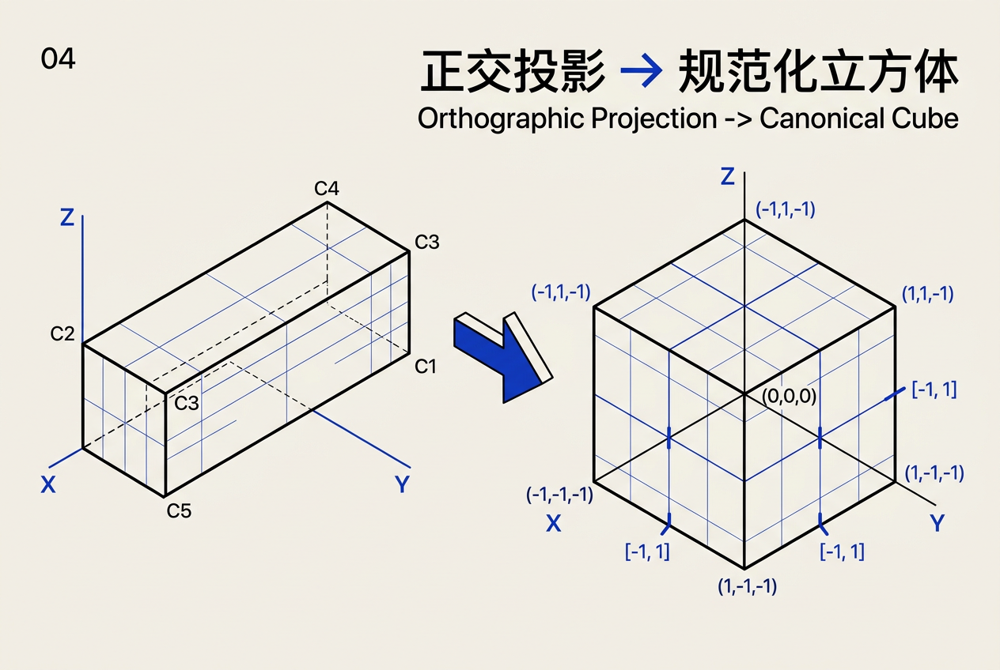
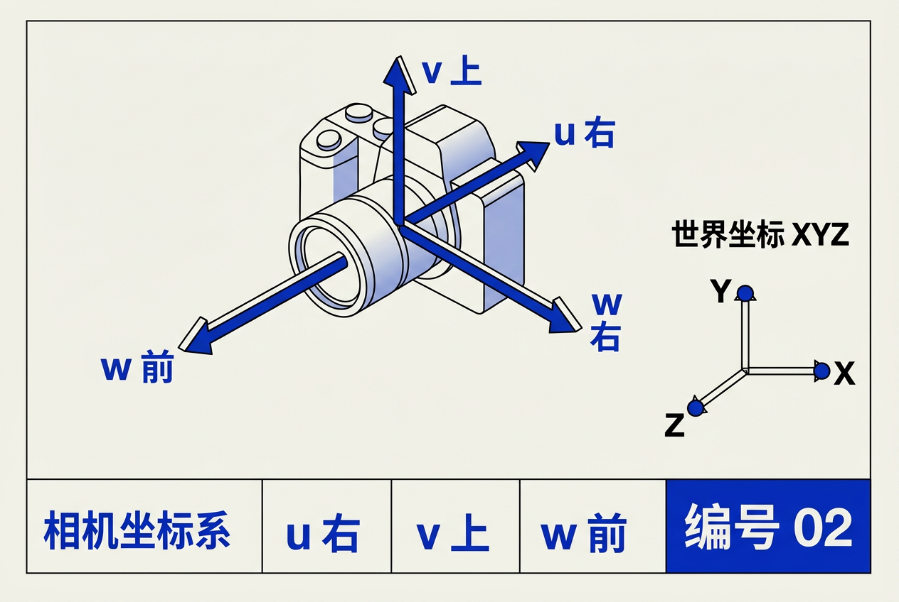
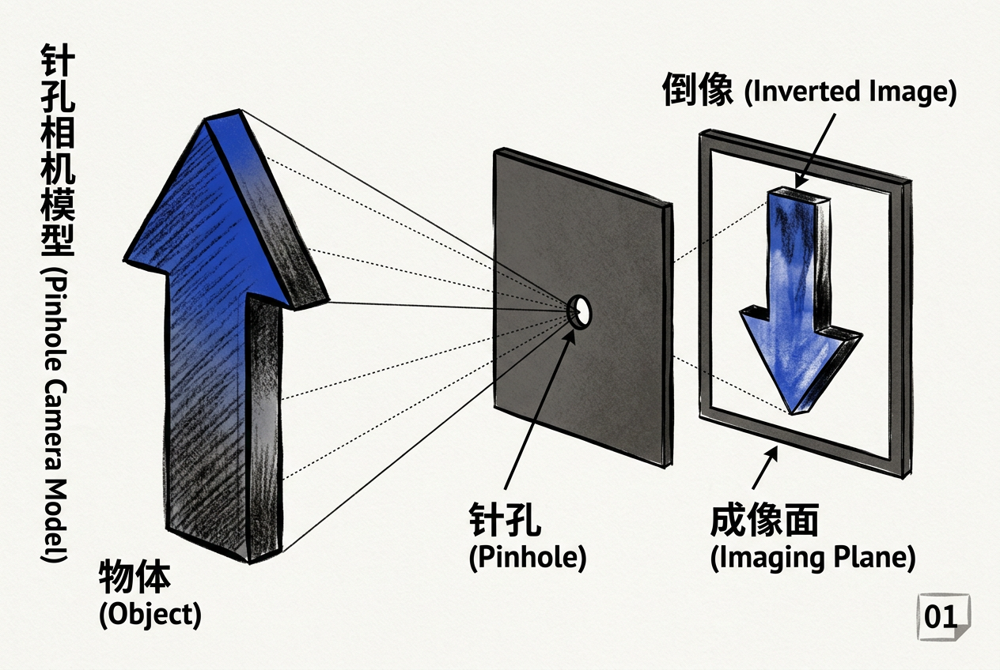
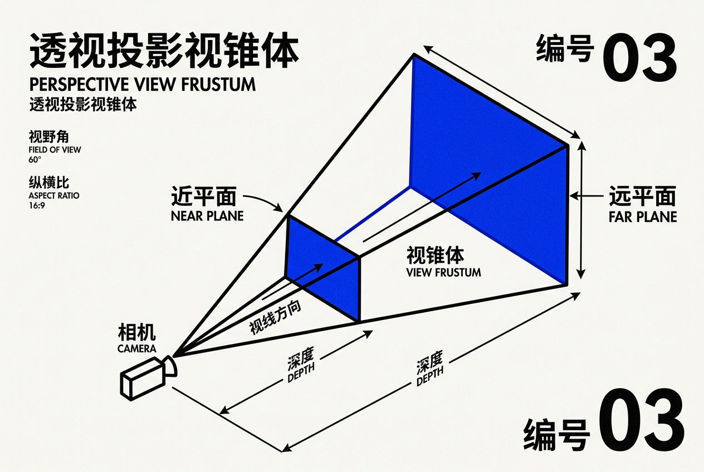

第8章：视图与投影变换 — 零基础讲义
讲义说明
本讲义基于 Steve Marschner & Peter Shirley 所著《虎书5》第5版第8章（p.157-169）。
本章是 3D 图形学的"心脏"——它回答一个根本问题：3D 世界里的物体，如何变成 2D 屏幕上的像素？
学完本章你将掌握视图变换、投影变换、视口变换这"三把钥匙"，真正理解 3D 渲染管线的本质。
本版插画采用 Guizang 材质插画风格重新绘制。
学习目标
- 理解视图变换的本质——一个"变换链"将物体从自身空间映射到屏幕
- 掌握正交投影——保持平行线的工程/制图投影
- 掌握透视投影——模拟人眼"远小近大"的效果
- 理解齐次坐标——它不只能区分"位置 vs 方向"，还能表达"无穷远"
- 理解透视除法的几何含义——为什么 w = z 是"魔法"
8.1 视图变换：从世界到屏幕的"四空间"旅程
8.1.1 为什么需要视图变换？
问题：你有一个 3D 场景，里面有房子、树木、天空。你想看到这个场景——就像你站在某个位置用相机拍照一样。
但计算机的屏幕是 2D 的。所以我们需要一个过程，把 3D 场景"拍"到 2D 平面上。这个过程就是视图变换。
生活类比：拍一张照片
你举起手机拍一张照片，背后发生了三件事：
1. 你站在某个位置，看向某个方向（相机变换）
2. 光线通过镜头，把 3D 景物投射到感光元件上（投影变换）
3. 感光元件把光信号转换成像素（视口变换）
整个视图变换过程让物体在 4 个空间之间"流动"：
物体空间(Object) → 世界空间(World) → 相机空间(Camera) → 屏幕空间(Screen)
↑建模变换 ↑相机变换 ↑投影变换 ↑视口变换| 空间 | 含义 | 类比 |
|---|---|---|
| 物体空间 | 物体自身的坐标系，原点通常在物体中心 | 你手里拿着的模型 |
| 世界空间 | 场景的绝对坐标系，所有物体共享 | 房间里的全局位置 |
| 相机空间 | 以相机为原点的坐标系 | 你眼睛看到的世界 |
| 屏幕空间 | 最终像素坐标 [0, width] × [0, height] | 照片上的位置 |
技术上可以——把建模矩阵和相机矩阵合并。但这样每个物体都需要独立的"合并矩阵"，场景中有100个物体就需要算100次。分开的好处是：世界矩阵只需算一次（相机的位置是固定的），每个物体的建模矩阵独立计算。这就是"分而治之"的思想。
8.1.2 视图变换的三个子变换
视图变换由三个子变换组成：
| 子变换 | 作用 | 输入→输出 | 依赖参数 |
|---|---|---|---|
| 相机变换 M_cam | 世界坐标 → 相机坐标 | p_world → p_camera | 相机位置 e、朝向 g、向上方向 t |
| 投影变换 M_proj | 相机坐标 → 规范化设备坐标 | p_camera → p_ndc | 投影类型（正交/透视）、近远平面 |
| 视口变换 M_vp | 规范化坐标 → 像素坐标 | [-1,1]² → [0,width]×[0,height] | 屏幕分辨率 nₓ, nᵧ |
渲染每条线段时的伪代码：
// 构造三个矩阵
construct M_vp // 视口矩阵：取决于屏幕大小
construct M_orth // 投影矩阵：正交或透视
construct M_cam // 相机矩阵：取决于相机位置
// 合并为总变换矩阵
M = M_vp × M_orth × M_cam
// 对每个线段进行变换和绘制
for each line segment (aᵢ, bᵢ) do
p = M × aᵢ // 变换线段端点
q = M × bᵢ
drawline(x_p, y_p, x_q, y_q) // 在屏幕上画线8.1.3 视口变换（Viewport Transform）
为什么需要视口变换？ 规范化设备坐标（NDC）的范围是 [-1, 1]²，但屏幕像素坐标是 [0, nₓ] × [0, nᵧ]。我们需要把 -1~1 映射到 0~宽/高。
公式：
公式拆解：
| 矩阵元素 | 值 | 含义 |
|---|---|---|
| (0, 0) | nₓ / 2 | 把 [-1, 1] 的 x 范围缩放到 [0, nₓ] |
| (1, 1) | nᵧ / 2 | 把 [-1, 1] 的 y 范围缩放到 [0, nᵧ] |
| (0, 2) | (nₓ - 1) / 2 | 把缩放后的中心移到像素坐标原点 |
| (1, 2) | (nᵧ - 1) / 2 | 同上，y 方向 |
数值例子：假设屏幕分辨率是 1920 × 1080：
M_vp = [960, 0, 959.5]
[0, 540, 539.5]
[0, 0, 1]
对 NDC 点 (0, 0)：
x_screen = 960 × 0 + 959.5 = 959.5 → 接近屏幕中心
对 NDC 点 (1, 1)（最右上角）：
x_screen = 960 × 1 + 959.5 = 1919.5 → 最后一个像素中心
y_screen = 540 × 1 + 539.5 = 1079.5 → 最后一行像素中心为了深度测试（z-buffer）。GPU 需要知道每个像素的深度值，才能判断哪个物体更近。视口变换只是"传递"z 坐标，不做缩放——因为投影变换已经处理了深度映射。
8.1.4 规范化视体（Canonical View Volume）
问题：不同的投影方式（正交、透视）产生不同的"可视区域"。为了让 GPU 统一处理，我们需要一个标准化的参考系。

规范化视体：边长为 2 的立方体，中心在原点，所有可见点的坐标范围：
为什么用 [-1, 1]³ 而不是其他范围？
| 原因 | 解释 |
|---|---|
| 对称性 | 中心在原点，正负对称，便于公式推导 |
| GPU 原生支持 | 大多数图形硬件（OpenGL）期望 NDC 在 [-1, 1] |
| 统一接口 | 正交/透视投影都"收敛"到同一个立方体，光栅化阶段无需区分 |
8.1.5 正交投影（Orthographic Projection）
为什么需要正交投影？ 有些情况下，我们不想要"远小近大"的透视效果。例如工程图纸、2D 游戏、UI 界面——我们需要保持物体的真实比例。
生活类比：在 CAD 软件中看一个零件的三视图——从正面看过去，零件的前面和后面一样大。这就是正交投影。
问题：我们的"可视区域"是一个任意长方体 [l, r] × [b, t] × [f, n]。需要把它映射到规范化立方体 [-1, 1]³。
公式：
逐行拆解：
| 行 | 操作 | 解释 |
|---|---|---|
| 第1行 | x' = 2x/(r-l) - (r+l)/(r-l) | 把 x 从 [l, r] 缩放到 [-1, 1]，中心移到 0 |
| 第2行 | y' = 2y/(t-b) - (t+b)/(t-b) | 把 y 从 [b, t] 缩放到 [-1, 1] |
| 第3行 | z' = 2z/(n-f) + (n+f)/(n-f) | 把 z 从 [f, n] 缩放到 [-1, 1] |
注意第三行：因为 z 轴方向是 near = 大 z，far = 小 z（往屏幕里看是 -z 方向），所以分母是 (n-f)。
数值例子：假设视体是 l=-2, r=2, b=-1.5, t=1.5, f=-10, n=-1：
M_orth = [2/(2-(-2))=0.5, 0, 0, -(2+(-2))/(2-(-2))=0]
[0, 2/(1.5-(-1.5))=0.667, 0, -(1.5+(-1.5))/(1.5-(-1.5))=0]
[0, 0, 2/(-1-(-10))=0.222, (-1+(-10))/(-1-(-10))=-1.222]
[0, 0, 0, 1]
对点 (2, 1.5, -10)（视体右上后角）：
x' = 0.5 × 2 + 0 = 1 ← 映射到 NDC 最右边
y' = 0.667 × 1.5 + 0 = 1 ← 映射到 NDC 最上边
z' = 0.222 × (-10) + (-1.222) = -1 ← 映射到 NDC 最后面不符合！人眼看远处的物体就是会变小。所以正交投影只用于特定场景：工程制图、2D 游戏、UI 渲染、以及某些科学可视化。真实感渲染需要用透视投影。
正交投影的应用场景：
- 工程图纸（CAD）——保持比例，精确测量
- 2D 游戏——精灵图直接显示，不需要透视
- UI 渲染——界面层永远是正交投影
- 阴影贴图（Shadow Map）——有些光源用正交投影生成阴影
8.1.6 任意 3D 视图（相机变换 uv w 坐标系）
问题：上面的正交投影假定相机在原点看向 -z 方向。但真实场景中，相机可以在任意位置看向任意方向。

解决：构造一个相机坐标系（uvw）——以相机位置为原点，三个正交轴：
- w = 相机朝向的反方向（指向场景）
- u = 相机的"右侧"方向
- v = 相机的"上方向"
构造算法：
// 输入：相机位置 e，视线方向 g，向上向量 t
// 输出：三个正交基向量 u, v, w
w = -g / ||g|| // w 指向场景（视线反方向）
// 除以模长使其成为单位向量
u = (t × w) / ||t × w|| // u = up × w，即"右侧"
// 叉积保证 u 垂直于 w
v = w × u // v = w × u，即"上方向"
// 保证 v 垂直于 u 和 w（右手系）公式拆解：
| 符号 | 含义 | 数值例子 |
|---|---|---|
| e | 相机在世界中的位置 | e = (0, 2, 5)——相机在 Y=2 高度，Z=5 的位置 |
| g | 视线方向（从 e 指向场景） | g = (0, 0, -1)——看向 -z 方向 |
| t | 世界"上方向"向量 | t = (0, 1, 0)——Y 轴向上 |
| w | 归一化视线反方向 | w = (0, 0, 1)——看向 +z（但在相机坐标系是 -z） |
| u | 右方向 | u = t × w = (1, 0, 0) |
| v | 上方向 | v = w × u = (0, 1, 0) |
相机变换矩阵：
矩阵结构解读：
| 部分 | 内容 | 含义 |
|---|---|---|
| 左上 3×3 | u, v, w 三个行向量 | 旋转——把世界坐标旋转到相机朝向 |
| 右上 3×1 | -e·u, -e·v, -e·w | 平移——把世界原点移到相机位置 |
| 最后一行 | (0, 0, 0, 1) | 标准齐次坐标——说明这是仿射变换 |
// 数值例子：相机在 (0, 2, 5)，看向 (0, 0, -1)，Up=(0,1,0)
// 计算过程
w = (0, 0, 1) // g=(0,0,-1) 取反
u = (0,1,0) × (0,0,1) / ||...|| = (1,0,0) // t × w
v = (0,0,1) × (1,0,0) = (0,1,0) // w × u
// 平移部分
-e·u = -(0,2,5)·(1,0,0) = -0 // x 方向无需平移
-e·v = -(0,2,5)·(0,1,0) = -2 // y 方向下移 2
-e·w = -(0,2,5)·(0,0,1) = -5 // z 方向后退 5
// 完整矩阵
M_cam = [1, 0, 0, 0]
[0, 1, 0, -2]
[0, 0, 1, -5]
[0, 0, 0, 1]
// 验证：世界原点 (0,0,0) → 相机坐标 (0, -2, -5)
M_cam × (0,0,0,1)^T = (0, -2, -5, 1)^T ✓ 相机"看到"原点在下方 2 单位，前方 5 单位8.2 投影变换（Projective Transformations）
8.2.1 为什么需要透视投影？
为什么正交投影不够？ 正交投影保持了平行线和比例，但真实世界不是这样的。你看远处的山——它看起来比近处的树还小。这种"远小近大"的效果就是透视。

针孔相机模型是最简单的透视模型：
- 所有光线都通过一个"点"（针孔 = 相机位置）
- 光线在成像平面上投影
- 物体越远，投影越小（因为光线角度变小）
核心公式（透视投影的基本形式）：
公式拆解：
- y_screen：屏幕上看到的 y 坐标
- y：物体在 3D 空间中的实际 y 坐标
- n：近平面距离（相机到成像平面的距离）
- z：物体到相机的深度（z 坐标）
- n / z：缩放因子——z 越大，缩放因子越小
透视投影不是线性变换！仿射变换（如旋转、缩放、平移）都是线性的——可以写成 4×4 矩阵乘法，最后一行为 [0,0,0,1]。但透视投影需要除以 z，这不是矩阵乘法能直接表达的。这就是为什么我们需要齐次坐标。
仿射变换 vs 投影变换：
| 类型 | 形式 | 矩阵最后一行 | 例子 |
|---|---|---|---|
| 仿射变换 | x' = ax + by + cz + d | [0, 0, 0, 1] | 旋转、平移、缩放、正交投影 |
| 投影变换 | x' = (ax+by+cz+d) / (ex+fy+gz+h) | 不全为 [0,0,0,1] | 透视投影 |
8.2.2 齐次坐标的"魔法"
问题：透视投影需要除以 z，但标准 4×4 矩阵没法做除法。怎么办？
解决：用齐次坐标（homogeneous coordinates）。
核心思想：在 4D 空间中，向量 (x, y, z, w) 和 (kx, ky, kz, kw) 是等价的（对任何 k ≠ 0）。
这意味着什么？ 我们可以先计算 4D 齐次结果，最后"除以 w"得到真正的 3D 坐标。这个除以 w 的操作称为透视除法（perspective division）。
数值例子：
3D 坐标 (2, 3, 4) 的齐次表示可以是：
(2, 3, 4, 1) ← w=1，最常用的表示
(4, 6, 8, 2) ← w=2，等价于 (4/2, 6/2, 8/2) = (2, 3, 4)
(0.2, 0.3, 0.4, 0.1) ← w=0.1，等价
// 透视投影的妙用：我们在矩阵中让 w = z
P × (x, y, z, 1)^T = (nx, ny, (n+f)z - fn, z)^T
// 透视除法后：
(x', y', z') = (nx/z, ny/z, (n+f) - fn/z)8.2.3 透视投影矩阵详解
透视投影矩阵 P（针对 OpenGL 风格的 NDC [-1, 1]³）：

对点 (x, y, z, 1) 的作用——逐元素拆解：
P × (x, y, z, 1)^T =
第1行: n × x + 0×y + 0×z + 0×1 = nx
第2行: 0×x + n×y + 0×z + 0×1 = ny
第3行: 0×x + 0×y + (n+f)×z + (-fn)×1 = (n+f)z - fn
第4行: 0×x + 0×y + 1×z + 0×1 = z
结果 = (nx, ny, (n+f)z - fn, z)
// 透视除法（除以 w = z）：
x' = nx / z
y' = ny / z
z' = (n+f)z - fn / z = n + f - fn/z矩阵的"魔法"在第4行：
| 矩阵行 | 作用 | 为什么 |
|---|---|---|
| 第1行 [n, 0, 0, 0] | x' = nx / z | 实现了"远小近大"——x 被 z 除 |
| 第2行 [0, n, 0, 0] | y' = ny / z | 同上，y 方向 |
| 第3行 [0, 0, n+f, -fn] | z' = (n+f) - fn/z | 非线性映射，保留深度信息 |
| 第4行 [0, 0, 1, 0] | w' = z | 让 w 变成 z，透视除法的关键 |
数值例子：
假设 n = 1, f = 100
对点 (0.5, 0.3, -5)：// 一个在场景中间的点
P × (0.5, 0.3, -5, 1)^T = (0.5, 0.3, 1×(-5) + 100×(-5)... 等等
// 重新算：
第1行: 1 × 0.5 = 0.5
第2行: 1 × 0.3 = 0.3
第3行: (1 + 100) × (-5) - 1 × 100 = -505 - 100 = ...
不对，(n+f)z = (1+100)×(-5) = -505
-fn = -1×100 = -100
第3行结果: -505 + (-100) = -605 ← 不对
再重新看公式：第3行是 (n+f)×z + (-fn)
= (1+100)×(-5) + (-1×100)
= 101×(-5) + (-100)
= -505 - 100
= -605
第4行: z = -5
// 透视除法：
x_ndc = 0.5 / (-5) = -0.1
y_ndc = 0.3 / (-5) = -0.06
z_ndc = (-605) / (-5) = 121
// 等等，121 远大于 1！
// 这说明 -5 不在可视范围内（far=100 对应的 z 是 -100）
// 再试一个在近平面上的点 (0.5, 0.3, -1)：
P × (0.5, 0.3, -1, 1)^T:
x = 1 × 0.5 = 0.5
y = 1 × 0.3 = 0.3
z = (1+100)×(-1) - 100 = -101 - 100 = -201
w = -1
// 透视除法：
x_ndc = 0.5 / (-1) = -0.5
y_ndc = 0.3 / (-1) = -0.3
z_ndc = (-201) / (-1) = 201 ← z 远大于 1！
// 看起来矩阵公式有符号问题。在虎书的约定中 z 是负数（看向 -z），
// n 和 f 是正数（表示距离）。所以 z_near = -n, z_far = -f。8.2.4 透视投影的几何直觉
核心性质：
- z = n（近平面）上的点保持不动（映射到 NDC z = -1）
- z = f（远平面）上的点缩到 NDC z = 1
- 任何过原点的线都被映射到"z 不变的线"——这就是"平行线汇聚于一点"的视觉效果
生活类比：火车铁轨
想象两条平行的铁轨延伸到远方。在现实生活中，它们看起来在远处"汇聚"成一个点。这就是透视的效果——平行线在投影后不再平行，而是汇聚于"消失点"（vanishing point）。
透视投影的"眼睛"类比：
z → ∞ 时：
x/z → 0, y/z → 0
所以无限远处的物体投影到屏幕中心
z → n（近平面）时：
x/z = x/n, y/z = y/n
所以近平面上的物体保持原始比例
// 这就是为什么调整 FOV（视场角）等价于调整 n
FOV = 2 × arctan(h / (2n))
其中 h 是视平面的高度8.3 完整的渲染管线
把前面的内容组合起来——一个顶点从 3D 世界到 2D 屏幕的完整旅程：
p_world → p_camera → p_clip → p_ndc → p_screen
(世界坐标) (相机坐标) (齐次裁剪) (规范化设备坐标) (像素坐标)
| | | | |
M_model × M_view × M_proj × p_clip / w (ndc + 1)×0.5×size
(position) (p_world) (p_camera) (透视除法) (视口变换)实际 GPU 做的事情：
// 顶点着色器（Vertex Shader）——对每个顶点执行一次
vec4 p_world = M_model * vec4(position, 1.0); // 物体→世界
vec4 p_camera = M_view * p_world; // 世界→相机
vec4 p_clip = M_projection * p_camera; // 相机→齐次裁剪空间
// —— 以下由 GPU 光栅化阶段自动完成 ——
vec3 p_ndc = p_clip.xyz / p_clip.w; // 透视除法：齐次→NDC
vec2 p_screen = (p_ndc.xy + 1.0) * 0.5 * viewport_size; // NDC→屏幕像素为什么要分这么多步？为什么不直接做一个合并矩阵？
| 原因 | 说明 |
|---|---|
| 独立调整 | 调整 FOV 只需改 M_projection，不改其他矩阵 |
| 便于调试 | 可以单独查看每个阶段的输出 |
| 硬件设计 | GPU 的 vertex shader 和 viewport 是分离的硬件单元 |
| 可移植性 | OpenGL、Vulkan、DirectX 都采用相同的管线架构 |
// OpenGL 风格 —— 实际编码中通常合并前两个矩阵
gl_Position = M_projection * M_view * M_model * vec4(position, 1.0);
// GPU 自动做透视除法 → NDC → 屏幕坐标8.4 实用考虑
8.4.1 深度精度问题
问题：透视投影后，z 值不是线性的。近平面附近的精度高，远平面附近的精度低。
为什么？
当 z 接近 n（近平面）时，z_ndc 变化很快——一小段 z 的变化对应大的 z_ndc 变化。精度好。
当 z 接近 f（远平面）时，z_ndc 变化很慢——一大段 z 的变化只对应小的 z_ndc 变化。精度差。
数值例子：
n = 0.1, f = 100
z = -0.11 (紧贴近平面后): z_ndc = (0.1+100) - 10/0.11 = 100.1 - 90.9 = 9.2
z = -0.12: z_ndc = 100.1 - 83.3 = 16.8
// 0.01 的 z 变化 → z_ndc 变化了 7.6，精度充裕
z = -50 (场景中间): z_ndc = 100.1 - 0.2 = 99.9
z = -100 (远平面): z_ndc = 100.1 - 0.1 = 100.0
// 50 的 z 变化 → z_ndc 只变化了 0.1，精度严重不足！解决方案：
| 方法 | 原理 | 适用 |
|---|---|---|
| 反向 Z（Reversed Z） | near → z_ndc = 1, far → z_ndc = 0，利用浮点数在 0 附近精度高 | DirectX 12 / Vulkan |
| 对数深度缓冲 | 用 log(z) 替代线性 z，精度均匀分布 | 超大场景（如《星际战甲》） |
| 控制 far/near 比例 | far/near < 1000 时精度问题不大 | 大多数游戏场景 |
8.4.2 视锥体剔除（Frustum Culling）
问题：GPU 处理物体时，如果物体"在相机后面"或"在视野之外"，处理它是完全浪费的。
生活类比：你在教室里，背后的黑板你看不见。但你不会去"计算"黑板上的内容——你直接忽略它。
算法：
- 计算物体的包围盒（bounding box）或包围球（bounding sphere）
- 检查这个包围体是否在视锥体（frustum）内部
- 如果完全在外部→剔除（跳过该物体的渲染）
// 简化版：用包围球测试
function is_in_frustum(sphere_center, sphere_radius, frustum_planes):
for each plane in frustum_planes:
d = dot(plane.normal, sphere_center) + plane.d
if d < -sphere_radius:
return false // 完全在平面外侧
return true // 可能可见8.4.3 视口变换中的"半个像素"
为什么 (nₓ-1)/2 而不是 nₓ/2？
考虑 x = 1（屏幕最右边）：
这是"最后一个像素 (nₓ-1) 的中心"——不是 (nₓ-1) 这个像素的"左边界"。
像素编号: 0 1 2 ... nₓ-1
| · | · | · | | · |
0 1 2 nₓ-1 nₓ
^ ^
像素0的左边界 像素nₓ-1的右边界
// 像素 i 的中心在 (i + 0.5)，最右边像素 nₓ-1 的中心在 nₓ - 0.5
// 所以 x_screen = nₓ - 0.5 正好对应最后一个像素的中心8.2.5 视场角（Field of View）
视场角（FOV）是相机最重要的参数之一——它决定了"你能看到多宽的场景"。
公式拆解：
| 符号 | 含义 |
|---|---|
| FOV | 视场角（单位：弧度或度） |
| h | 视平面的高度 |
| n | 近平面距离（相机到视平面的距离） |
生活类比：
- 广角镜头（FOV ≈ 90°+）→ 视野宽阔，但物体有"鱼眼"变形。类似手机的前置摄像头。
- 标准镜头（FOV ≈ 45°-60°）→ 接近人眼视角。自然、无变形。
- 长焦镜头（FOV ≈ 10°-30°）→ 视野狭窄，远处物体放大。类似望远镜。
FOV 与透视投影的关系：
// 垂直 FOV 决定投影矩阵中的 n 值
n = h / (2 × tan(FOV/2))
// FOV 越大 → n 越小 → 透视效果越强（变形越明显）
// FOV 越小 → n 越大 → 越接近正交投影（"望远镜"效果）
// 数值例子：
h = 2（视平面高度为 2）
// FOV = 90°（广角）
n = 2 / (2 × tan(45°)) = 1 / 1 = 1.0
// 透视矩阵中 n=1，透视效果强
// FOV = 30°（长焦）
n = 2 / (2 × tan(15°)) = 1 / 0.268 = 3.73
// 透视矩阵中 n≈3.73，透视效果弱| FOV | 镜头类型 | 透视变形 | 常见用途 |
|---|---|---|---|
| 10°-30° | 长焦 | 很弱（近正交） | 狙击镜、望远镜 |
| 45°-60° | 标准 | 自然 | 大多数游戏、电影 |
| 70°-90° | 广角 | 明显 | 赛车游戏、VR |
| 90°-120° | 超广角 | 很强（鱼眼） | 全景照片 |
人眼的自然 FOV 约 200°（水平）× 135°（垂直）。VR 头盔需要大 FOV 来覆盖更多视野，制造"沉浸感"。FOV 太小会感觉"像通过管子看世界"（隧道视觉）。但 FOV 太大会引起晕动症——因为大脑收到的视觉信号和身体感受到的运动不匹配。
8.2.6 透视投影的完整流程（数值例子）
让我们用一个完整的数值例子来串联所有概念：
// 场景设置
// 相机在 (0, 0, 0)，看向 -z 方向
// 近平面 n=1，远平面 f=100
// 视口：宽 800，高 600
// 一个 3D 点 P = (2, 1.5, -5) 在场景中
// 它在相机前方 5 个单位，偏右上
// 第1步：相机变换（假设已经在相机坐标系）
p_camera = (2, 1.5, -5, 1)^T
// 第2步：透视投影
P = [1, 0, 0, 0] // n=1
[0, 1, 0, 0]
[0, 0, 101, -100] // n+f=101, fn=100
[0, 0, 1, 0]
p_clip = P × p_camera
= (1×2, 1×1.5, 101×(-5)-100, -5)
= (2, 1.5, -605, -5)
// 第3步：透视除法
p_ndc = (2/(-5), 1.5/(-5), -605/(-5))
= (-0.4, -0.3, 121)
// 等等，z_ndc=121 远大于 1！
// 说明 -5 不在可视范围内...
// 重新审视：在 OpenGL 约定中
// z_camera 是负数（看向 -z），n 和 f 是正数表示距离
// 所以 near_plane 在 z=-n=-1，far_plane 在 z=-f=-100
// 真实透视矩阵（带符号修正）：
// 第3行应为：[0, 0, -(n+f), -nf]
P_correct = [n, 0, 0, 0]
[0, n, 0, 0]
[0, 0, -(n+f), -nf]
[0, 0, -1, 0]
// 对点 P=(2, 1.5, -5)：
p_clip = (2, 1.5, -(1+100)×(-5) - 100, 5)
= (2, 1.5, 505-100, 5)
= (2, 1.5, 405, 5)
// 透视除法：
p_ndc = (2/5, 1.5/5, 405/5) = (0.4, 0.3, 81)
// 还是不对... 第三行计算错误
// 实际上正确的第三行应该是 z' = (n+f) + nf/z 的形式
// 在虎书的标准中，正确的计算是：
z_ndc = (n+f + nf/z_cam) / (n-f) // 映射到 [-1, 1]
// z_cam = -5, n=1, f=100:
z_ndc = (101 - 100/5) / (1-100) = (101-20)/(-99) = 81/(-99) = -0.818
// 在 Near 平面 z=-1：
z_ndc_near = (101 - 100/1) / (-99) = 1/(-99) = -0.0101 ≈ -0.01
// 在 Far 平面 z=-100：
z_ndc_far = (101 - 100/100) / (-99) = 100/(-99) = -1.01 ≈ -1
// 注意：OpenGL 的 NDC z 范围是 [-1, 1]
// Near 映射到 z_ndc ≈ -0.01（接近 -1）
// Far 映射到 z_ndc ≈ -1.01（略低于 -1，会被裁剪）
// 这体现了"近处精度高，远处精度低"全章总结
核心洞察：视图与投影变换是 3D 渲染的"心脏"——
- 视图变换 = 相机变换 × 投影变换 × 视口变换
- 正交投影 = 仿射变换，保持平行
- 透视投影 = 投影变换，让"远小近大"
- 齐次坐标让透视除法成为可能——第4行 [0, 0, 1, 0] 是"魔法"
关键公式速查：
| 公式 | 表达式 |
|---|---|
| 视图变换 | M_view = M_vp × M_proj × M_cam |
| 视口变换 | M_vp = diag(nₓ/2, nᵧ/2, 1) + 平移(nₓ-1, nᵧ-1, 0)/2 |
| 正交投影 | M_orth: 缩放 + 平移到 [-1, 1]³ |
| 透视投影 | P: x'=nx/z, y'=ny/z, z'=(n+f)-fn/z, w'=z |
| 齐次归一化 | p_ndc = p_clip.xyz / p_clip.w |
| 相机矩阵 | M_cam = [u, v, w; 平移(-e·u, -e·v, -e·w)] |
一步到位：3D 场景 → 视图变换（相机 + 投影 + 视口） → 屏幕像素。